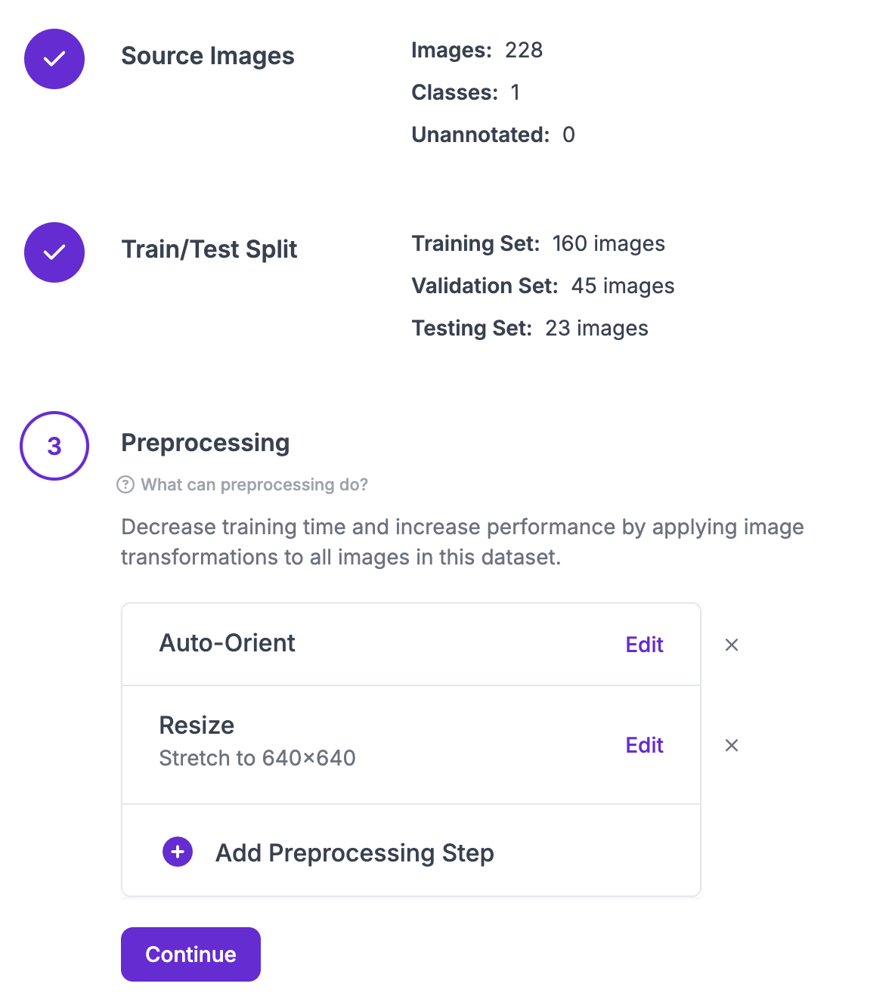

Roboflow Preprocessing to Ultralytics Hub Training
August 28, 2025
I finished labeling a lot of images. Some images were hard to capture with square bounding boxes, especially diagonal images. There were a lot of labels I was not too confident about either, especially those that stretched the entire length of the screen or similiar situations. This just goes back to the important of setting specific labeling guidelines, and general labeling documentation, so that in the future if the problem does have somethign to do with the way data was labeled, we can go back and fix that issue.
Earlier today I used roboflow for the first time to process the data. I exported the annotation with a specific format from anylabeling, and passed it into a roboflow workspace/project Then, I split the training validation testing data standard with 70/20/10, but I'm going to keep those values in mind. In general, I'm keeping most hyperparameters in mind just in case they do end up effecting the model performance.

There were a lot of preprocessing options, such as adjusting the size of the image, adding data augmentation. on that note, I chose to keep the standard 640/640 layout because it was recommended for YOLO models. I chose to add no augmentation as a baseline so that I could compare model performance to with/without augmentation.Moving on, we moved the dataset to ultralytics hub and now have it set up to train. I'm goign to train it in colab at first, just because I want to experiment with ultralytics hub and don't want to do it on the funded virtual machines. Moving on, I'm going to train the model and see how it does with evaluations. then, i'll start exploring with the virtual machine options for larger training.